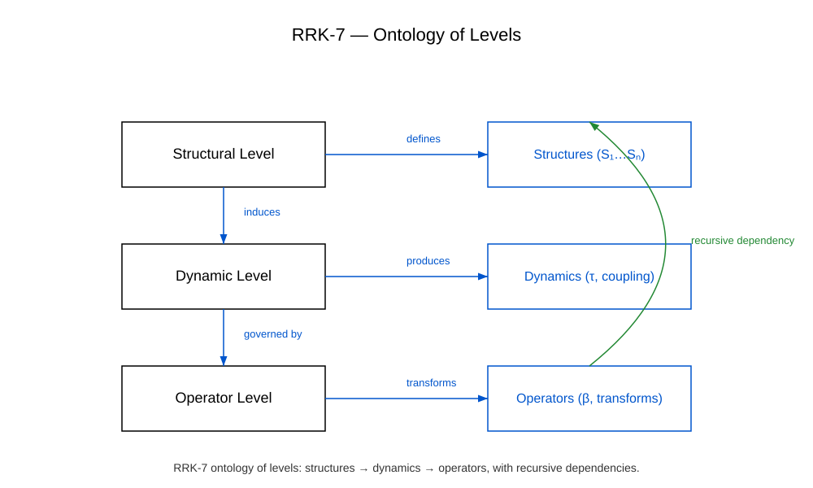

Ontological Levels
The ontological levels of the RRK framework define the hierarchical structure of recursive and emergent processes. Each level represents a distinct form of structure, dynamics, and functional capacity.
Level 1 — Recursive Base Level
The base level contains the elementary recursive units that serve as the starting point for all higher structures. It provides the foundation for iterative transformations.
Level 2 — Meta‑Level
The meta‑level emerges through repeated recursion and forms the first stable structure above the base level. It enables new functional patterns and transitions.
Level 3 — Emergence Level
The emergence level includes structures generated by the emergence operator. These patterns cannot be directly derived from the base level.
Level 4 — Convergence Level
The convergence level stabilizes emergent patterns and transforms them into consistent meta‑structures. It forms the basis for higher architectural layers.
Level 5 — Transformation Level
The transformation level describes the structural evolution of stable meta‑structures. It enables the formation of complex architectural patterns.
Illustration
